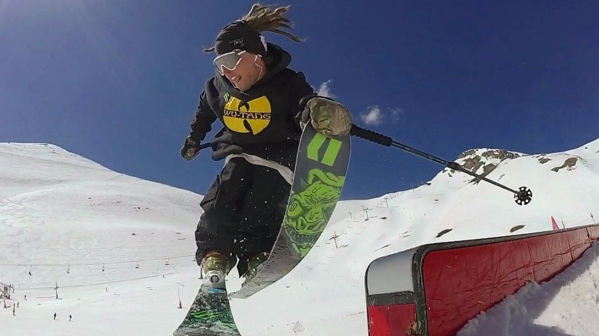
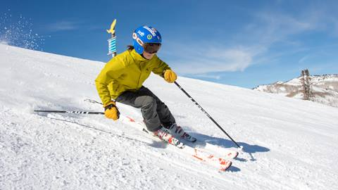
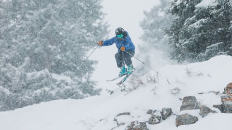
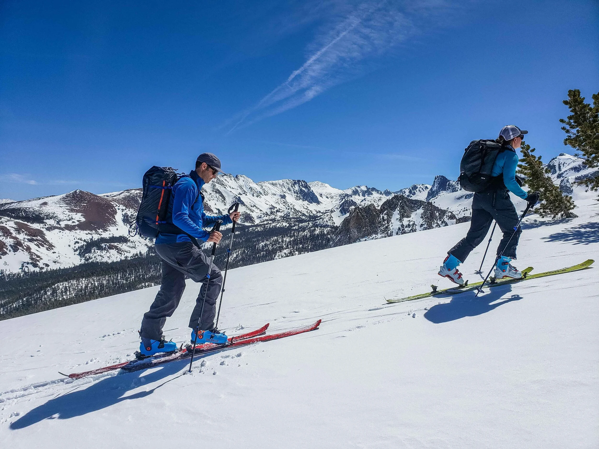
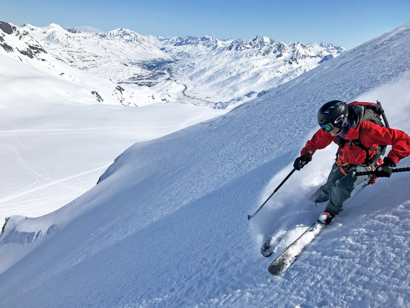
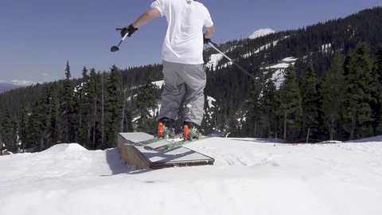

Jackson Nieporte
Different Types of Skiing
Park Skiing
Park skiing is a freestyle discipline where skiers ride through a terrain park—an area filled with man-made features designed for tricks, style, and creativity. Instead of focusing on speed or racing, park skiers use jumps, rails, boxes, walls, and other features to perform spins, flips, grinds, and stylish maneuvers. It blends elements of skateboarding, BMX, and traditional skiing, emphasizing personal expression as much as technical skill.
All Mountain
All Mountain Skiing
All-mountain gear is versatile and balanced for various terrain on a resort, while freeride gear is specialized for aggressive riding in steep, variable, and off-piste conditions, often with a wider profile for powder and a stiffer flex for stability. The choice depends on your riding style and where you spend most of your time: all-mountain for a "jack-of-all-trades" approach and freeride for a focus on big-mountain and backcountry adventures.
All Mountain Skis
All-mountain skis are versatile skis designed for a variety of terrain and conditions, from groomed slopes to off-piste snow. They strike a balance between carving skis, which are narrow and best for groomers, and freeride skis, which are wider and better for deep powder. A typical all-mountain ski has a medium waist width, often between 85-95mm, and includes features like rocker in the tip for easier turn initiation and better flotation in soft snow.
Backcountry
Backcountry Skiing
Backcountry skiing is skiing in unmarked, ungroomed, and unpatrolled areas, either outside or inside a ski resort's boundaries, requiring specialized gear and skills for both uphill travel and downhill descent.
Gear You Should Have Below.
Skis: Black Diamond Helio Carbon 102 Skis — light and good for variable terrain. Bindings: Use with either the Marker Alpinist 12 or the Atomic Backland Summit 9 BR depending on your style. Boots: Dynafit Radical Pro — good performance + touring capability. Skins: Pomoca Tour Pro — reliable grip + glide. Poles: Adventure Carbon Touring Poles — lightweight, strong. Essential safety (not linked): beacon, probe, shovel, etc.
Park Skiing Features
Park Jumps

Park skiing is Skiing jumps—often called kickers—are specially shaped snow ramps designed to launch skiers into the air so they can perform tricks, float stylish grabs, or simply catch some airtime. They're a core feature of terrain parks and vary widely in size, shape, and difficulty.
Boxes
Skiing boxes are wide, flat, usually plastic- or metal-topped features found in terrain parks that skiers slide across using balance and edge control. They're one of the most approachable freestyle features and a great starting point for learning park skills before moving on to narrower, more technical rails.
Contact
Social